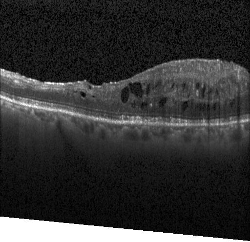
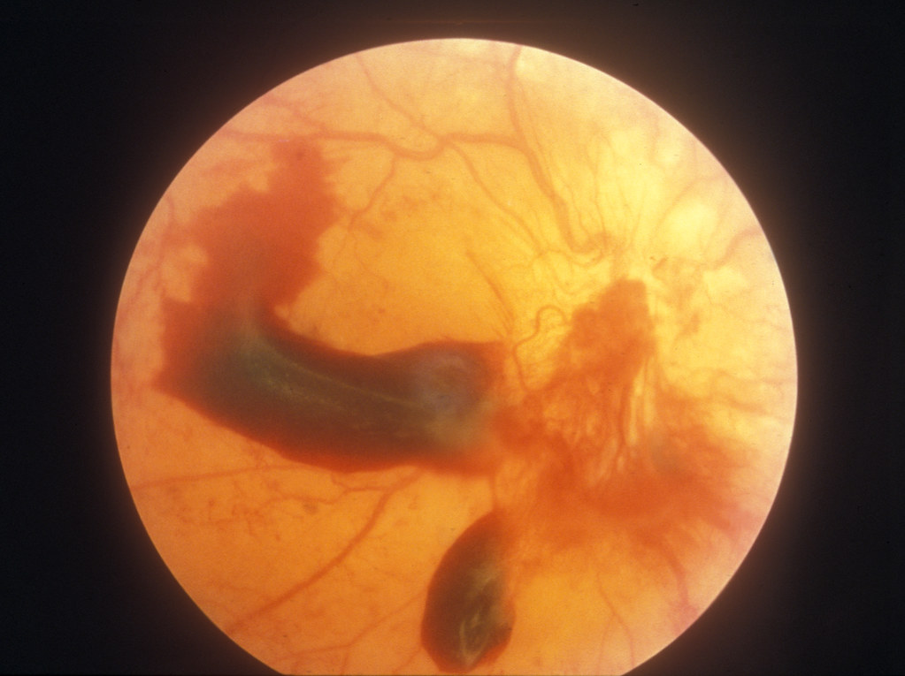
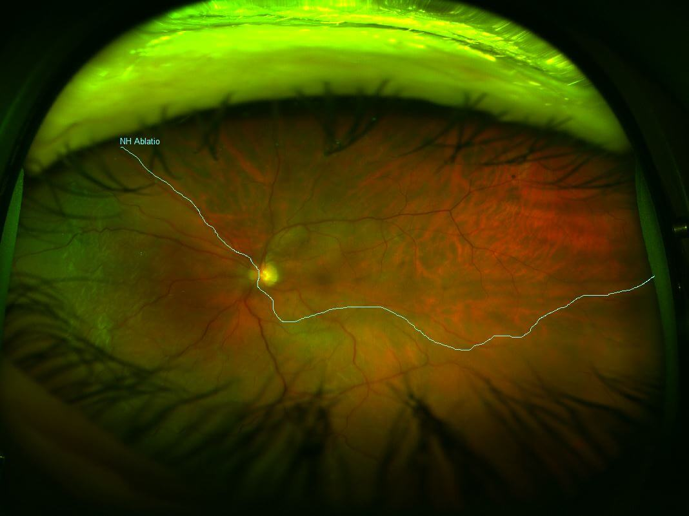
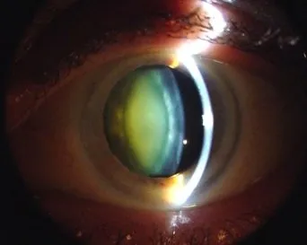

Complications of Diabetic Retinopathy

Diabetic Macular Edema
- The most common cause of vision loss in DR.
- Caused by leakage of fluid from damaged retinal capillaries into the macula.
- Leads to retinal thickening, swelling, and impaired central vision.
- Strongly associated with chronic hyperglycemia, hypertension, and long disease duration.
- VEGF-driven inflammation increases vascular permeability, worsening the edema.

Vitreous Hemorrhage
- Fragile new blood vessels from proliferative DR can rupture and bleed into the vitreous cavity.
- Causes sudden vision loss, floaters, or a “red haze.”
- Diabetes increases the risk of vitreous hemorrhage 25-fold.
- Recurrent hemorrhage can require vitrectomy surgery.

Tractional Retinal Detachment (TRD)
- New abnormal blood vessels grow with fibrous tissue.
- As this fibrotic tissue contracts, it pulls the retina off its normal position.
- TRD can cause permanent, severe vision loss if not treated urgently.
- One of the most vision-threatening outcomes of proliferative DR.

Neovascular Glaucoma (NVG)
- Severe retinal ischemia increases VEGF, causing abnormal vessels to grow on the iris.
- These vessels block fluid outflow, causing dangerously high eye pressure.
- Leads to optic nerve damage, severe eye pain, and rapid vision loss.
- Very difficult to treat; often requires surgery.
Blindness
- Vitreous hemorrhage
- Tractional retinal detachment
- Neovascular glaucoma
DR-related blindness greatly impacts quality of life, patients may experience psychological and lifestyle challenges due to sudden dependence on others.

Other Ocular Complications
- Cataracts — progress faster in diabetic patients with DR.
- Intraocular pressure elevation — due to neovascularization and inflammation.
- Corneal abnormalities — changes in corneal epithelium or edema.
- Anterior chamber angle changes — further contributing to glaucoma risk.
References
All information on this page is referenced from:
Khidr, E. G., Morad, N. I., Hatem, S., El-Dessouki, A. M., Mohamed, A. F., El-Shiekh, R. A., Hafeez, M. S. a. E., & Ghaiad, H. R. (2025). Natural remedies proposed for the management of diabetic retinopathy (DR): diabetic complications. Naunyn-Schmiedeberg S Archives of Pharmacology, 398(7), 7919–7947. https://doi.org/10.1007/s00210-025-03866-w
All images retrieved from Google Images with creative commons license